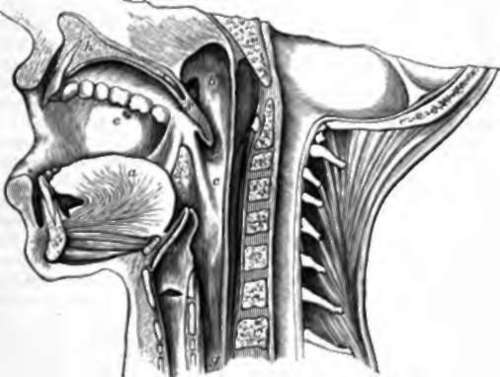

58. Course Of The Ingesta
Description
This section is from the book "Animal Physiology: The Structure And Functions Of The Human Body", by John Cleland. Also available from Amazon: Animal Physiology, the Structure and Functions of the Human Body.
58. Course Of The Ingesta
The mouth, or buccal cavity, as it is technically called to distinguish it from the opening of the lips, is walled in by voluntary muscles of the face; within the arches of teeth it has the tongue in its floor, and its roof formed by the palate, which separates it from the nasal cavity, while it communicates behind with the throat, by a constricted part called the fauces. The arch of the fauces is limited above by a prolongation backwards of the palate, consisting of soft parts unsupported by bone, and termed the soft palate or velum palati. This has a free edge directed backwards, and prolonged into a pendulous structure in the middle, called the uvula, while on each side descend from it two prominences, the anterior and posterior pillars of the fauces. Between these are placed the glandular-looking bodies known as the tonsils, structures of obscure function, but sometimes troublesome by enlargement, or by inflammation and ulceration in sore throat.
The cavity behind the fauces is called the pharynx. It is surrounded behind and on the sides with constrictor muscles, while in front it communicates with a number of openings. It extends above the soft palate to the base of the skull, and there it has in front of it the posterior nares, or apertures of the nasal cavities, which are continued back from the nostrils, separated one from the other by a septum. At the sides of the posterior nares are the Eustachian tubes leading back to the ears. Below the soft palate, in series from above downwards, are the arch of the fauces, the glottis, or opening into the windpipe, and the aesophagus, which is the continuation downwards of the pharynx, but, unlike it, is a complete tube with strong circular and longitudinal muscular fibres round it.
Fig. 49. Buccal Cavity and Pharynx, vertical section, a, tongue, b, nasal or upper division of pharynx, and to the front of it the orifice of the Eustachian tube; c, inferior division of pharynx; d, tonsil with the anterior and posterior pillars of the fauces in front and behind it; e, orifice of duct of parotid gland; f, the top of the larynx, with the epiglottis in front of it; g, oesophagus; h, section of hard palate; s, of soft palate and uvula.
Loosely connected with the skull by ligament and muscle, is a slender U-shaped bone, the hyoid, which can be felt with the finger at the fold between the neck and the chin. Suspended from this is the larynx, or the upper part of the windpipe, modified as the organ of voice, while to its upper surface is attached the root of the tongue; and behind it is the epiglottis, a plate of reticular cartilage covered with mucous membrane, which in the state of rest stands straight up in front of the glottis, but in swallowing is folded down over that opening, so as to prevent anything entering into the air passages.
59. When solid food is taken into the mouth, the teeth, the tongue, the palate, and the muscles of the jaws and cheeks, combine to break it down by mastication. The jaws act as a double lever of the third order, like a pair of tongs; the powerful muscles which shut them being placed nearer the joints than are the ranges of teeth between which the food is crushed. In biting with the incisor teeth, the jaws are simply brought together; but in breaking the food up with the molar ranges, the lower jaw is slightly rotated from side to side, at the same time that it is withdrawn from and approached to the upper, and thus the food is rubbed between the opposed cusps as well as bruised by them. The tongue presses the food out from between it and the palate, and throws it on to the teeth on one side or other, thus mixing it up and aiding the thorough permeation of the saliva; and the muscles of the cheeks catch the portions which are crushed outwards by the teeth, and return them inwards.
The act of swallowing, or deglutition, consists of three parts, of which the first is voluntary, the second spasmodic, and the third involuntary.
The purely voluntary part consists in pushing the bolus back between the tongue and palate till it reaches the fauces. As soon as it gets there, the will initiates a process, which, when started, proceeds with great rapidity and is finished in a moment, without the will being able to delay it. This spasmodic stage involves a number of structures. If the finger be placed on the hyoid bone, it will be found to be jerked suddenly upwards and forwards; at the same time the back of the tongue, on which the food has been placed, is jerked upwards and backwards; and any one who can succeed in swallowing with the mouth open in front of a looking-glass, will see that the soft palate is made tense, and that the two posterior pillars of the fauces * for a moment approach the middle line, so as with the aid of the uvula to shut off the nasal part of the pharynx from the lower portion. By this means the food is thrown back into the lower part of the pharynx, and thereupon, by the contraction of the pharyngeal constrictors, it is propelled into the oesophagus, and so into the stomach. At the same time that provision is made to prevent the food passing up into the nose, the windpipe is also effectually protected from the entrance of the smallest particle. This is accomplished by the upward and forward movement of the hyoid bone, by which the larynx is brought under cover of the root of the tongue, and that part of the tongue, being also pulled backwards, pushes with it the epiglottis, pressing it down over the aperture of the air passage, while the contraction of a few muscular fibres at the sides of that structure shut it down completely like a lid.
The propulsion of the food down the aesophagus is of the same description as along the intestine. The oesophagus, as has been mentioned, is surrounded with circular and longitudinal fibres; the latter are outermost, as is the typical intestinal arrangement; and in both intestine and oesophagus what happens is this:—the longitudinal fibres contract in the part of the tube in which the food is, the circular fibres contract immediately behind and over it, and thus the food is forced on, and, as it travels, the wave of contraction travels with it. In the intestine, this method of contraction is called vermicular or peristaltic movement.
Continue to: